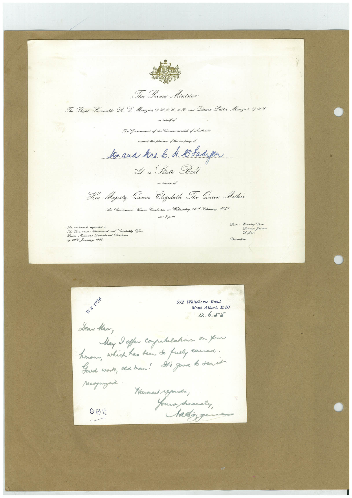

Book 1 · scan 133


Description
Transcription
Context
Review notes
Compare the machine draft with the scan. Handwriting and names need human review.
Artifacts
Edit the artifacts field in this note’s frontmatter to change these records. This summary is generated.
B01-S133-A01 — Invitation & Letter — Book 1, scan 133
Types: Invitation, Letter
Scope: Whole scanned page; individual items can be split out during review.
Caption: Not mapped yet.
Caption source: Not recorded yet.
Caption status: unmapped
Machine transcription
The Time Minister The Right Homourable R. E. Menzics, B.I. C.C..1.9. and Dume Pattie Mengies, G.98. one lehalf of The Government of the Commonwealth of Australia request the ploasuse of the company of lon and bars. b. A B Baagen At a Sate Ba in honour of Her Majesty Queen Elizalith The Queen Mother Al Parliament House. Canberra, on Wednesday, 26t Foruary, 1958 at 9p.m. in andiver is sequeated a Government Ceremonial and Hospitality Offo Prime Ministers Department Cankera by 29% Junuary, 1958 Dress: Evening Dress Dinner Jacket Uniform Decorations WX 1736 572 Whitehorse Road Mont Albert, E.10 12.6.55 Lear Hac, May offer compatulations on your honour, which has teen so full lawned. Goud work, old han! Sti good to see it recognized OBE Koument regards, Anocaly, as your